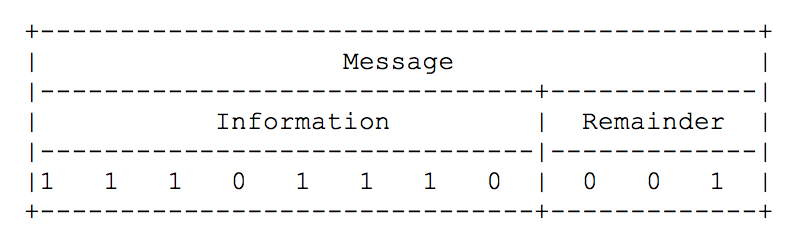
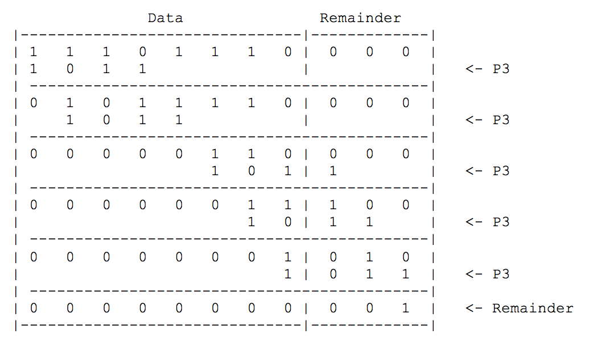
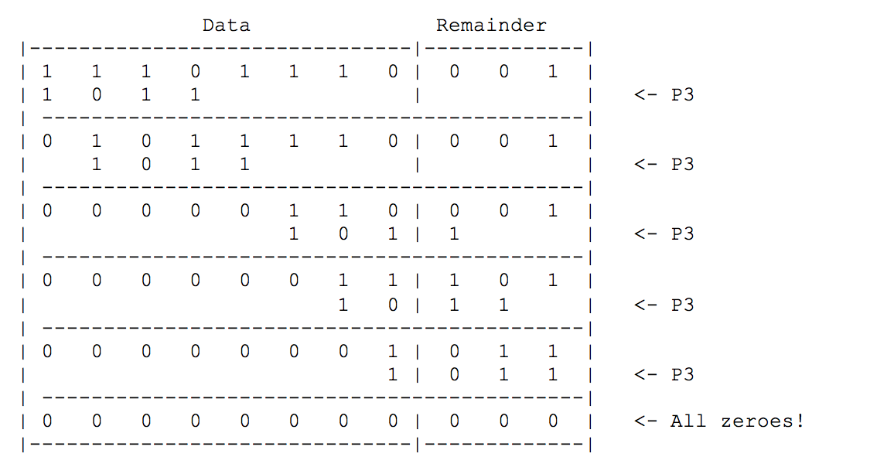

Problem made by Lockheed Martin, is CodeQuest 2017 Problem 12
This problem has a difficulty of 55
You are on vacation in orbit around the planet Neptune. You are having so much fun that you are willing to let your inhibitions fly away with the solar wind and take a selfie to send to your relatives on Earth. Your space phone can send the image to Earth; however, since Neptune and Earth are so far away from each other, radiation interference can corrupt the data. Furthermore, in order to not tie up the space phone network, data must be sent in small chunks. Luckily for you, technology has advanced to the point that messages are received in the order they are sent. Because of the potential for interference, the space phone receiver on Earth may need to ask your space phone for parts of the image multiple times depending on interference and data corruption. A space phone company, Luca Industries, uses the Patriot Protocol to ensure message integrity.
Each Message (M) from your phone has Information (I) and a Remainder (R). Together they form what is known as the Luca Industries Data Chunk.
The Luca Industries Data Chunk:

The protocol provides a way for the message to the receiver to ensure with a high degree of certainty that there was no data corruption. This is done by adding extra digits (the remainder) to the end of the message.
The sender and receiver of any transmission using the Luca Industries Patriot Protocol use a pre-defined polynomial as part of the protocol. We call this the Patriot Protocol Polynomial, or P3 for short. For this problem, your P3 is:
1011
When sending a message from your space phone, this polynomial is used to determine the remainder to append to the information for each message. This is done using binary long division of the message by the polynomial. The length of the remainder is the length of the polynomial minus one.
Encoding
The following example shows how we would encrypt the data 11101110 using the Patriot Protocol:

The remainder 001 is then appended to the message yielding the Luca Industries Data Chunk 11101110001
Decoding
The receiving side performs the same binary long division. If the data integrity was maintained, there should be no remainder after division. Otherwise, we can assume there was data corruption during transmission.

Notice that the P3 always slides to a position where its leftmost bit is beneath the leftmost bit in the data that contains a 1. Also notice that the division is done using the exclusive or function on the bits of the data and the P3 (meaning a 1 results if either the P3 or the data contains a 1, but not if they both do).
The first line of the file Prob12.in.txt will contain a positive integer T denoting the number of test cases that follow. Each test case will have the following input:
• A single 11 digit pre-encoded Luca Industries Data Chunk
5
11001101110
10000111010
10101011110
10000110111
11001111000
For each test case, your program should either output “ok” if the data was not found to be corrupt, or “corrupt” if it was.
ok
corrupt
corrupt